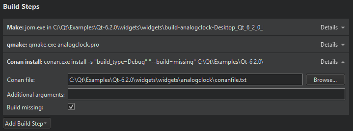

Conan Build Configuration
Specify build settings for the selected kit in Projects > Build & Run > Build > Build Settings.
To configure a project to be built using the Conan package manager, select Add Build Step > Run Conan Install.

In the Conan file field, enter the location of the conanfile.txt file for the project.
The Conan install field displays the effective build command. You can add arguments for the command in the Additional arguments field.
Select Build missing to build packages from source if binary packages are not found.
See also Conan Package Manager.